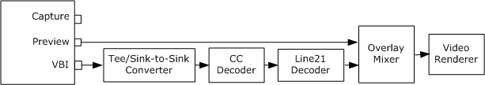
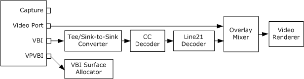

[The feature associated with this page, DirectShow, is a legacy feature. It has been superseded by MediaPlayer, IMFMediaEngine, and Audio/Video Capture in Media Foundation. Those features have been optimized for Windows 10 and Windows 11. Microsoft strongly recommends that new code use MediaPlayer, IMFMediaEngine and Audio/Video Capture in Media Foundation instead of DirectShow, when possible. Microsoft suggests that existing code that uses the legacy APIs be rewritten to use the new APIs if possible.]
To support closed captions in analog television, the capture filter exposes a pin that delivers either VBI or closed caption data. The pin will have one of the following pin categories:
To preview closed captions, call ICaptureGraphBuilder2::RenderStream with the VBI pin category, and if that fails, call it again with the CC category.
hr = pBuild->RenderStream(&PIN_CATEGORY_VBI, 0, pCap, 0, 0);
if (FAILED(hr))
{
hr = pBuild->RenderStream(&PIN_CATEGORY_CC, 0, pCap, 0, 0);
}
The following diagram shows a typical filter graph for displaying closed captions.

This graph uses the following filters for closed caption display:
The Capture Graph Builder's RenderStream method adds these filters automatically. If the capture filter has a CC pin instead of a VBI pin, the CC pin is connected directly to the Line 21 Decoder filter.
[!Note]
If you are using the Video Mixing Renderer (VMR) filter for rendering, use the Line 21 Decoder Filter 2. This filter has the same functionality as the Line 21 Decoder, but the CLSID is CLSID_Line21Decoder2.
Â
[!Note]
The CC Decoder filter was removed in Windows Vista. New applications should use the VBICodec filter, which is documented in the Microsoft TV Technologies documentation.
Â
If the capture device uses a video port, the capture filter might have a video port VBI pin (PIN_CATEGORY_VIDEOPORT_VBI). This pin must be connected to the VBI Surface Allocator filter, which allocates surfaces to hold the captured VBI data. The RenderStream method adds this filter if it is required. The following diagram shows a filter graph with the VBI Surface Allocator.

To control the captioning display, use the IAMLine21Decoder interface on the Line 21 Decoder filter. For example, you can turn off the captioning display using the IAMLine21Decoder::SetServiceState method, as follows:
// Use the FindInterface method to find the interface.
IAMLine21Decoder *pLine21 = NULL;
hr = pBuild->FindInterface(
&LOOK_DOWNSTREAM_ONLY, // Look downstream from pCap
NULL, // No particular media type
pCap, // Pointer to the capture filter.
IID_IAMLine21Decoder, (void**)&pLine21);
if (SUCCEEDED(hr))
{
pLine21->SetServiceState(AM_L21_CCSTATE_Off);
// (Use AM_L21_CCSTATE_On to enable.)
pLine21->Release();
}
This example uses the ICaptureGraphBuilder2::FindInterface method to locate the IAMLine21Decoder interface. The first parameter to FindInterface is &LOOK_DOWNSTREAM_ONLY, which specifies to search downstream from the capture filter (pCap).
You can capture the caption bitmaps into a file. To do so, add the file-writing section of the filter graph, as described in Capturing Video to a File. Then render the CC or VBI pin to the mux filter:
hr = pBuild->RenderStream(&PIN_CATEGORY_VBI, 0, pCap, 0, pMux);
if (FAILED(hr))
{
hr = pBuild->RenderStream(&PIN_CATEGORY_CC, 0, pCap, 0, pMux);
}
If you are also capturing the video, this will create a file with two separate video streams. It will not capture video with captions overlaid on top of the picture.
Â
Â